Switzerland
181/193
2023
landind page
concept
concept
designer
kirill khamshchuk
developer
artem
rakitskiy
rakitskiy
{kind=link}
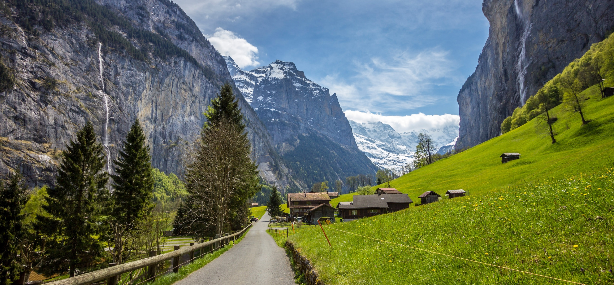
{kind=link}
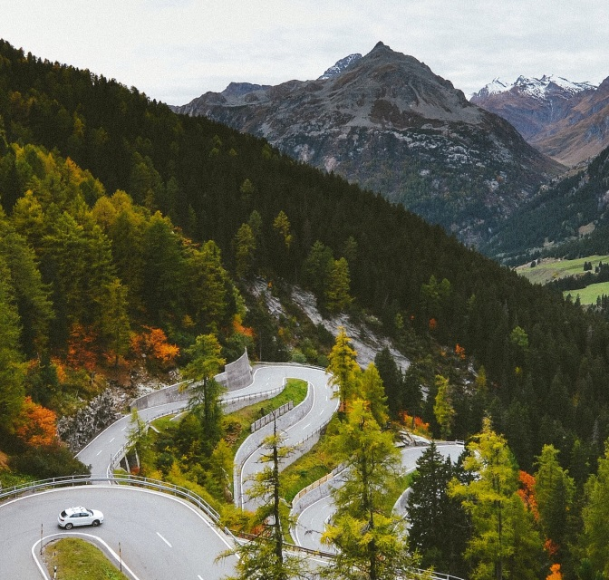
{kind=link}
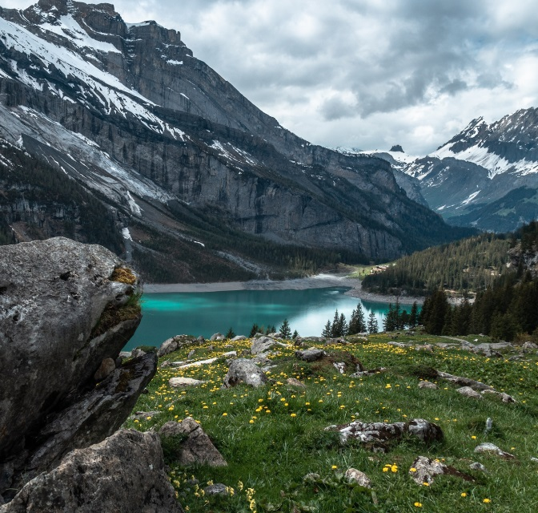
sights of
the country
the country
"Switzerland - History, Nature and Culture in Harmony: From Medieval Castles to Majestic Alpine Landscapes, From Chocolate Workshops to World Financial Centers, From Crystal Clear Lakes to Architectural Splendor -
Enjoy Unforgettable Swiss Landmarks That Will Leave You Stunned and Thrilling When You Open Your Doors to the Magical World of Beauty and Diversity."
{kind=link}
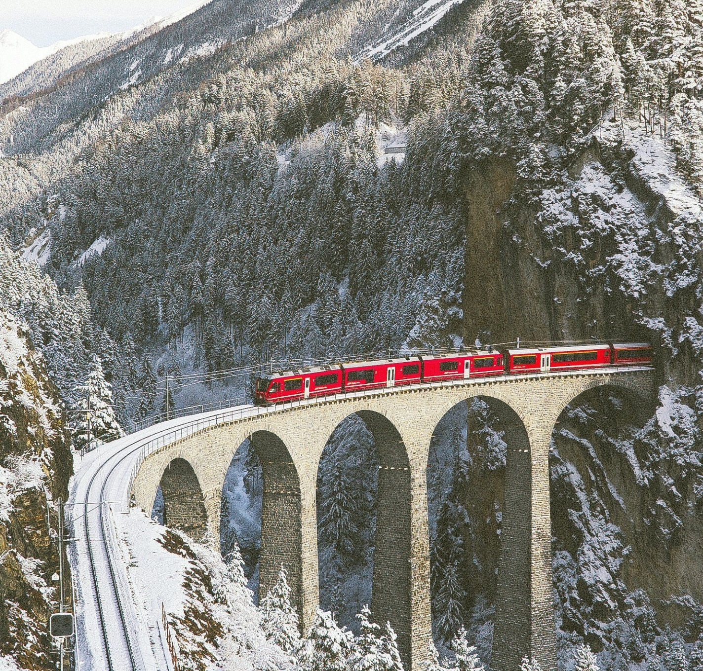
Gornergrat railway
{kind=link}
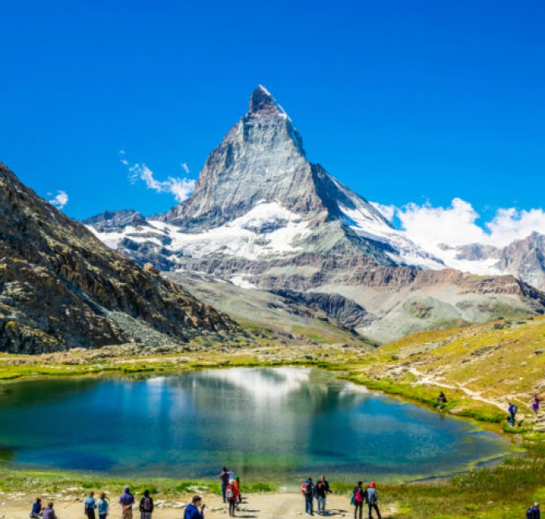
Matterhorn
{kind=link}
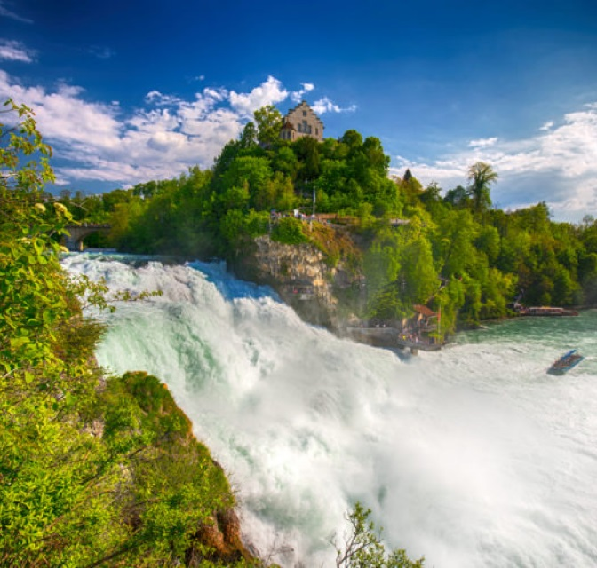
Rhine Falls
country history
Switzerland has been inhabited since the Stone Age. During the existence and flourishing of the Roman Empire (from the 5th century BC to the 4th century AD), Celtic tribes (Helvetians) lived here. The east of
Switzerland was inhabited by the Rhaetians, who were related to the Etruscans.
01
In the Middle Ages, Switzerland was fragmented into several kingdoms, which were subjugated by the Franks during the reign of Charlemagne in the 8th century. The Christianization of the population began in
the 4th century. In 843 the territory of Switzerland was divided between Italy and Germany.
02
In 1848, a new constitution was adopted in Switzerland. Since 1850, the franc has become the single currency, and the capital is Bern. In 1844, the first railway was built from Basel to Strasbourg. In the
First and Second World Wars, Switzerland took the side of military neutrality. In 1999 a new constitution was adopted.
03
{kind=link}
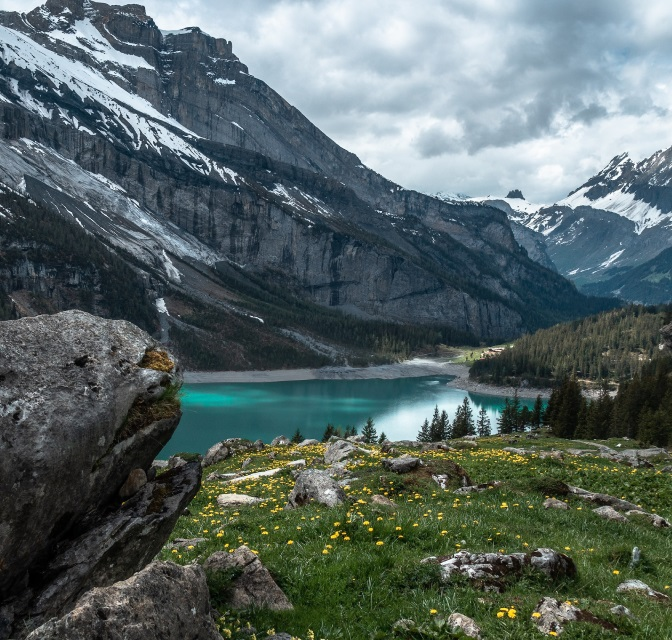
{kind=link}
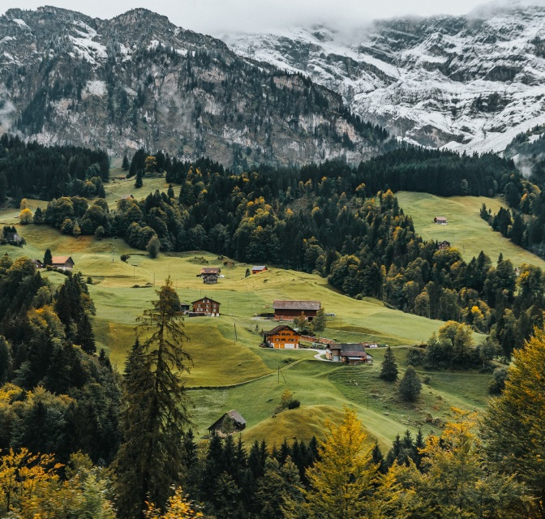
{kind=link}
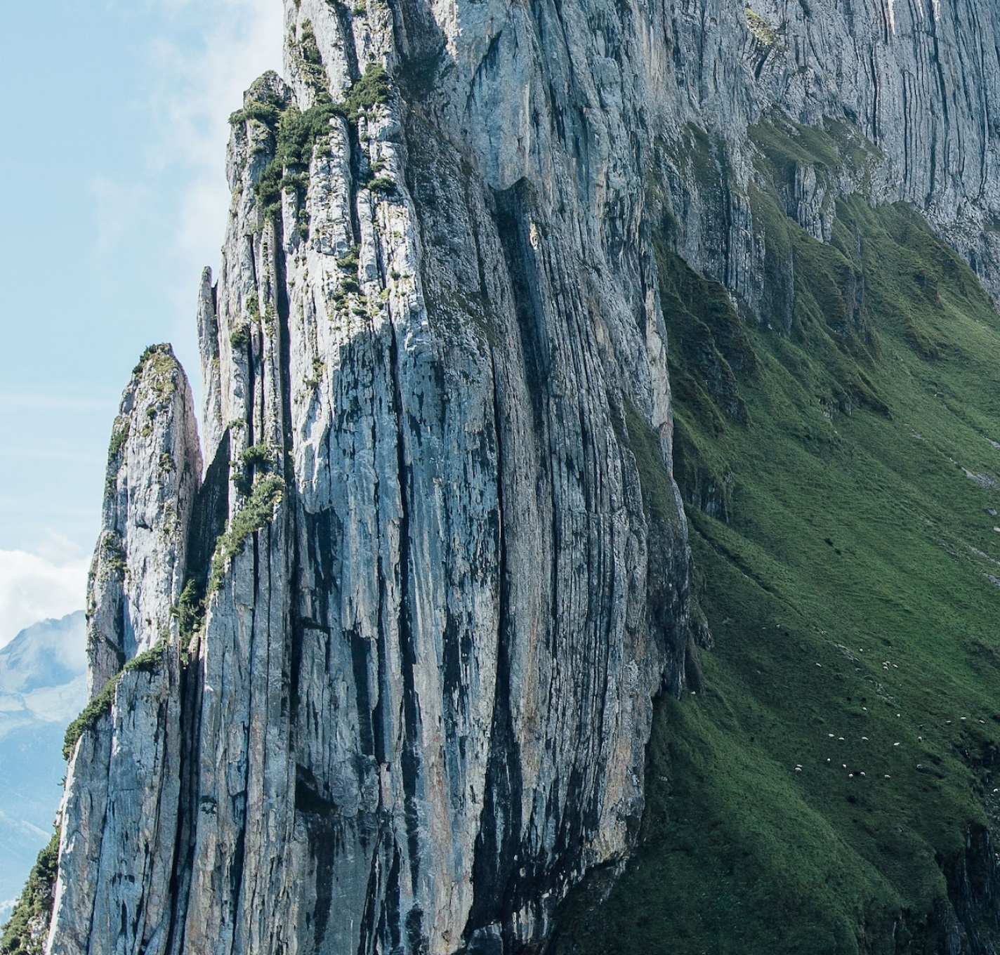
{kind=link}
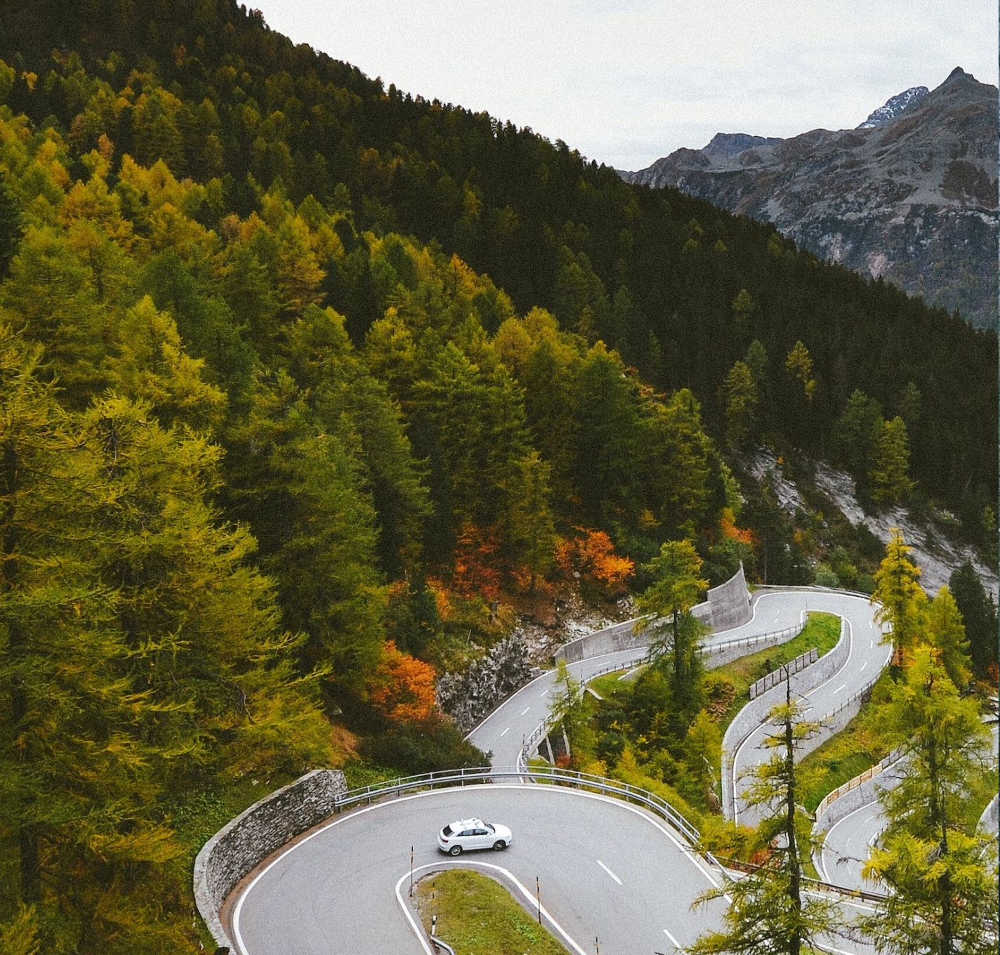
Best time to visit
Switzerland is open to tourists all year round and every season is good in its own way. If the main goal is its ski resorts, then you need to come in winter.
{kind=link}
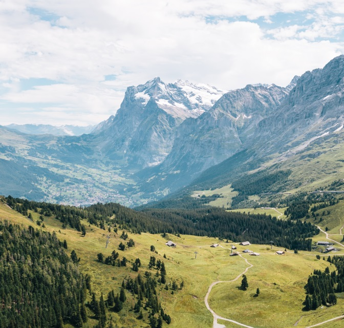
{kind=link}
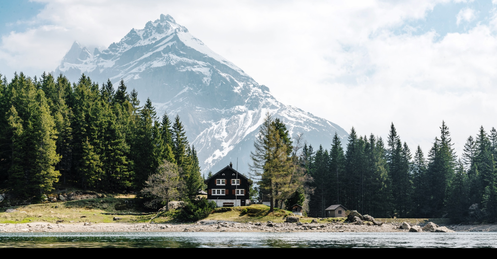